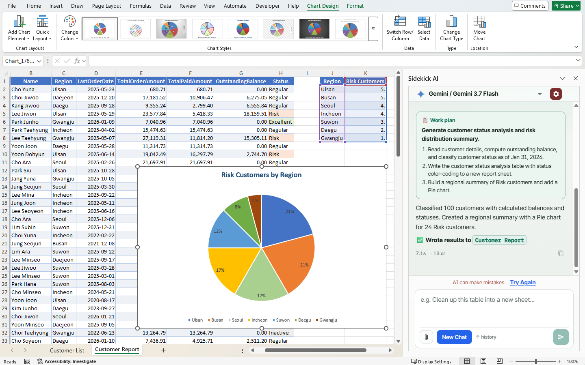
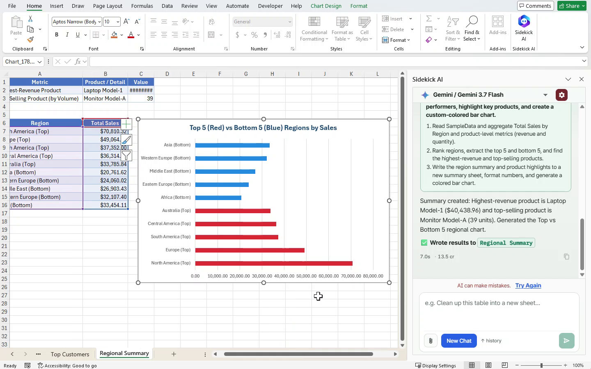
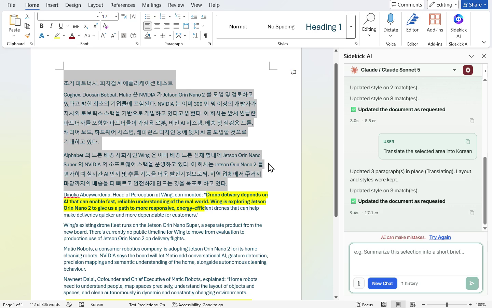
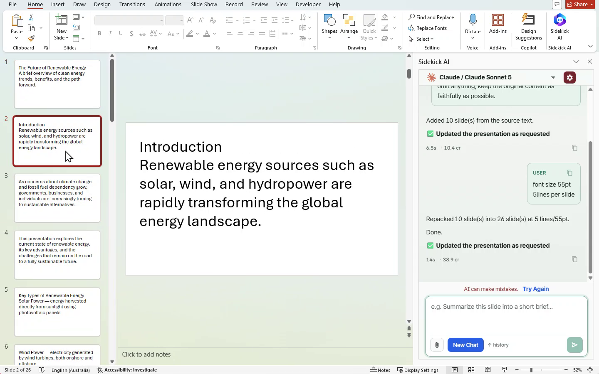
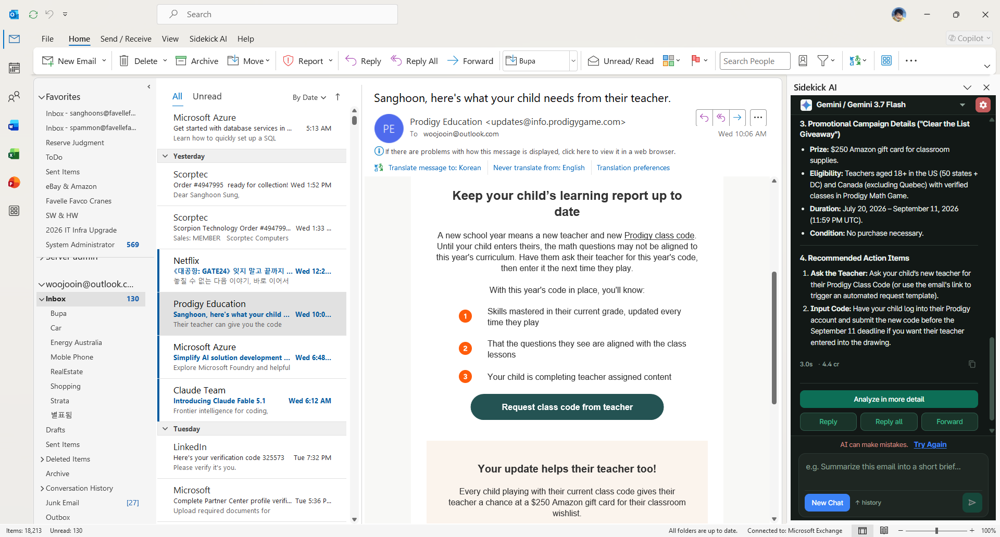

Ask in ordinary language
Clean a table, translate a selection, build slides, or summarize the open mail — without leaving Word, Excel, PowerPoint, or Outlook.
Microsoft 365 · AI Agent
Sidekick AI for Word · Excel · PowerPoint · Outlook
Ask in plain language inside Office and Outlook — the agent plans with structured context, then runs changes locally on your PC.

Most Office AI workflows upload the whole file or leave you copying answers back in. Sidekick AI keeps workbooks, documents, and mail on your PC — only structured metadata goes to the model.
Clean a table, translate a selection, build slides, or summarize the open mail — without leaving Word, Excel, PowerPoint, or Outlook.
The agent sends headers, samples, short structure, or mail preview — not the entire workbook, document, or mailbox. API keys stay on the gateway server.
The model plans; Office.js or the Outlook host runs on your machine. Generated scripts cannot call the network and only use allowed helpers.
Excel
Excel locks the active sheet at send time, sends headers plus a few sample rows, then creates a result sheet — classification, charts, summaries — while keeping the source intact.

Word
Word focuses on partial edits — selected text, quoted dialogue, or a named passage. In-place transforms replace segments without rebuilding the whole document.

PowerPoint
PowerPoint works at the text-shape level for in-place edits, or runs a two-stage slides pipeline: topic boundaries first, then line packing and slide creation on the host.

Outlook
The Outlook desktop panel works from the open item’s preview metadata — subject, senders, body preview, attachment names — then chats, runs structured mail analysis, or drafts reply text in compose.

The host collects metadata for the active Excel sheet, Word session, PowerPoint shapes, or open Outlook item — not the full file or mailbox.
A single complete API call reaches the Office AI Gateway. The model returns a RESULT protocol (chat, document, inplace, or slides).
Office.js or the Outlook host applies the change on your PC — new sheets, in-place text, slides, or compose drafts — with network calls blocked in generated scripts.
Office Add-in for Word, Excel, and PowerPoint on Windows, Mac, and Office on the web — plus an Outlook desktop panel. Multi-model gateway, monthly credits, and BYOK on paid plans.
I design and build Sidekick AI for Office and Outlook end to end — host adapters for Word, Excel, PowerPoint, and Outlook, the agent RESULT protocol, local execution, and the product experience on top of the Office AI Gateway.
Built with React, TypeScript, Vite, Office.js, and Outlook VSTO + WebView2. Deployed via Cloudflare Pages with Office add-in manifests for sideload and catalog install.